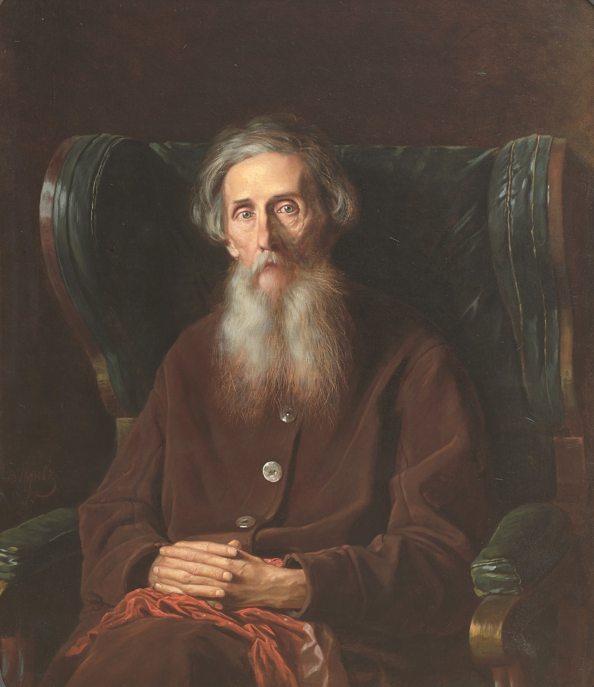

Русский писатель, этнограф, лексикограф, военный врач и создатель «Толкового словаря живого великорусского языка».
Владимир Иванович Даль родился 10 (22) ноября 1801 года в посёлке Луганский завод (ныне город Луганск) в высокообразованной семье. Его отец был врачом, а мать — обрусевшей немкой, знавшей несколько языков[reference:0].
Образование Даль получил в Морском кадетском корпусе в Петербурге, после чего служил морским офицером. Позже он окончил медицинский факультет Дерптского университета и стал военным врачом. Именно в годы странствий и службы он начал записывать услышанные народные слова, пословицы и сказки, которые впоследствии стали делом всей его жизни.
Даль был разносторонней личностью: он служил чиновником, дружил с Александром Пушкиным, писал прозу и сказки под псевдонимом «Казак Луганский». Но главным его трудом стал «Толковый словарь живого великорусского языка», над которым он работал более полувека.
Главный труд Даля. Содержит около 200 000 слов и 30 000 пословиц. За это издание он был удостоен Ломоносовской премии и звания почётного академика.
Уникальный сборник, в который вошло более 30 000 пословиц, поговорок и прибауток, собранных по всей России[reference:3].
Сборник сказок, принёсший Далю литературную известность. Написан в живой народной манере.
Автор произведений «Бедовик», «Говор», «Грех», «Двухаршинный нос» и других, в которых отразился его интерес к народной жизни[reference:4].
Дружба с Пушкиным: Даль познакомился с поэтом в 1832 году. Пушкин подарил ему рукопись «Сказки о рыбаке и рыбке» с надписью «Твоя от твоих!». В 1837 году Даль был одним из тех, кто неотлучно находился рядом с умирающим Пушкиным и записал его последние слова[reference:5].
Рекорд словаря: Над «Толковым словарём» Даль работал 53 года. Первое издание он вычитывал 14 раз, внося правки и дополнения[reference:6].
Собиратель сказок: Даль записал и передал известному собирателю фольклора А. Н. Афанасьеву около тысячи народных сказок[reference:7].